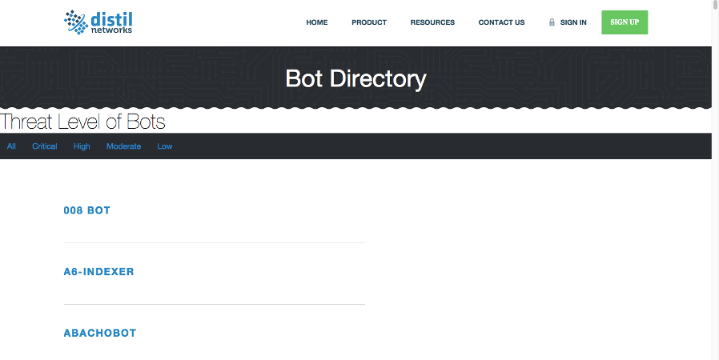

About Me
Don McLamb
I am a full-stack web developer, graduate from General Assembly's web development immersive program with a Bachelors in Social Science and a Masters in Cybersecurity
I am a full-stack web developer and a graduate from General Assembly's web development immersive program.
Prior to that I received my B.S. in Psychology and Sociology from Towson University, worked in software support for three years and I received my Masters in CyberSecurity from UMUC in December of 2014.
Cyberdesigns.io is a freelance company that I am starting to continue developing my skillset.
Feel free to review my Portfolio, ask me questions and reach out to me via e-mail or social media.
Thanks for stopping by!
More About Me:
-
Skills:
◉ HTML5
◉ CSS3 - Foundations, SASS, Compass
◉ Ruby - Rails, Devise, Cancancan, Rspec, ActiveRecord
◉ Javascript - jQuery, Backbone, Ajax, Jasmin, JSON
◉ Other Technologies - Microsoft Server 2012, Postgresql, Git, AWS, Heroku, Bower, NPM
◉ More Inside My Resume
-
What I’m excited about:
◉ Using javascript to develop apps that are responsive on multiple device platforms
◉ Next generation mobile devices
◉ Penetration testing
◉ Incorporating advanced security features into apps and developing security related apps and other security systems
-
Passions:
◉ Learning new things
◉ Problem solving
◉ Tai Chi Chuan
◉ Working out
-
Talents:
◉ Resourcefulness
◉ Persistence
◉ Adaptability
-
What I am looking for:
◉ Permanent positions as a front-end, back-end or full-stack developer
◉ Cybersecurity positions
◉ Freelance work
Portfolio
-

A application designed encouraging and supporting a
secure web.
-

A group project to connect policymakers to experts in order to inform policymakers when making decisions.
-

A group project to assist writers in promoting their work and allow readers an opprotunity to read short stories.
-

Prototype project for Meteor.js, an organizational app.
-

I created a filter for a prospective employer to sort through the bots on their web page.
HTTP (HyperText Transfer Protocol)
Written By: Don McLamb
Date: August 28th, 2015
HTTP Functionality & Purpose
HTTP is a protocol that allows clients to access resources on the web(web sites, files, images, .etc) and it exists at the upper layer (Application Layer) of the tcp/ip model. Web browsers utilize HTTP to communicate with resources on the web in order to present them to the user. Without HTTP the Internet would not be as we know it today.
When a client/web browser makes an attempt to access a website it sends the request to web server that hosts the site.
That request may look something like this:
Client Request:
GET /app/index.html HTTP/1.1
Host: www.test.com:80
From: User@gmail.com
User-Agent: Mozilla/5.0
-
The first line is the Initial Request/Response (the client makes the request and the server makes the response)
-
The second & third line are header lines that provide information about the client
-
Following the headers, of which there can be several there may be a message body, this can include a the contents of a file or query data
The Initial Request line
GET /app/index.html HTTP/1.1
- The HTTP Verb or Method
- The path to the file that is being requested or the Uniform Resource Identifier (URI) request
- The last part is the version of HTTP the client is attempting to utilize
After the server receives the request from the client it responsds, below is an example of the servers response to the client.
Server Response:
HTTP/1.1 200 OK
Date: Fri, 28 August 2015 14:05:02 GMT
Content-Type: text/html
Content-Length: 1000
<html>
<p>Page Content</p>
</html>
- The first line is the Initial Response
- The next three lines are headers that provide information about the data that is being supplied the client. When content is returned by the server in the message body the headers of Content-Type and Content Length are usually included
- After the headers the content of the request is provided at the end
The Initial Response line
- The HTTP version
- The status code
- The human readable status
Some commonly used headers are:
Conclusion
Understanding HTTP is important to troubleshooting a variety of network related issues and acquiring a better understanding regarding how the Internet functions.
Some other topics that will research further will be HTTP methods, common web vulnerabilities, and other protocols that important to having a strong understanding of network functionality.
There is a lot more to HTTP then what I covered here.Below are some interesting facts about HTTP I found and additional resources for those interested in learning more.
Side Notes & HTTP Facts:
- The general description of a response message is denoted based on the first number of the status code:
1xx - informational message
2xx - success message
3xx - redirects client
4xx - client error
5xx - server error
-
After each line is ended with ASCII CRLF, these characters signify that a new line is should be created for the data that follows it
-
Header lines are easy to identify because they follow a familiar format if you are used to javascript objects or ruby hashes:
Accept: text/plan
Accept-Charset: utf-8
-
HTTP/0.9 does not have any headers
-
The header name is not case sensitive but the value of the header may be.
-
It is possible for a header line to span multiple lines or have multiple values for one header, the value will be delimited with a comma
-
HTTP is a stateless protocol, it does not maintain a connection with a client after the transfer of data is complete
- The only required header is Host for the request and this is true only for HTTP 1.1
- There are several HTTP headers associated to security are located here also:
Owasp Security Headers List
- The server Response commonly contains a message body, as this is how the client receives the data that was requested. See additional sources and side notes to learn more about HTTP headers.